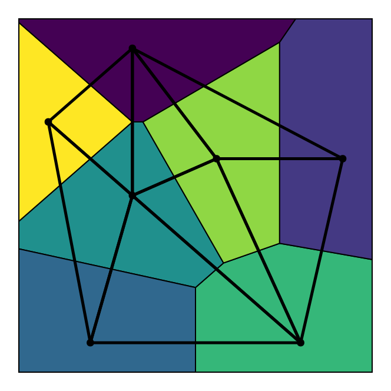

Voronoi Tessellations
Now we discuss Voronoi tessellations, the dual graph to a Delaunay triangulation. To define the Voronoi tessellation, let us first define a Voronoi polygon relative to a point set $\mathcal P$. A Voronoi polygon $\mathcal V_i$ of a generator $v_i$ is defined by
\[\mathcal V_i = \{p \in \mathbb R^2 : \forall q \in \mathcal P, \|p - p_i\| \leq \|q - p\|\},\]
meaning the polygon is the set of points at least as close to the generator $v_i$ as to any other point in $\mathcal P$. A Voronoi tessellation, then, denoted $\mathcal V(\mathcal P)$, is the union of all Voronoi polygons of each generator $p \in \mathcal P$ and their boundaries.
Duality
Let us first prove that the Delaunay triangulation and the Voronoi tessellation are duals of each other. To do this, we need to recognise that any point that is equidistant from three generators must be in a corner of the Voronoi diagram where three Voronoi polygons meet. Mathematically, this means that a point $q$ equidistant from generators $p_i$, $p_j$, and $p_k$ can be written as $q = \mathcal V_i \cap \mathcal V_j \cap \mathcal V_k$. With this fact in mind, let us consider a triangle $T_{ijk} \in \mathcal D\mathcal T(\mathcal P)$. By the Delaunay property, we know that there are no points in $\mathcal P$ inside the circumcircle of $T_{ijk}$. We can thus uniquely (assuming there are no cocircular vertices) associate each $T_{ijk}$ with its circumcenter, which by definition is equidistant from the three vertices of $T_{ijk}$. This circumcenter is therefore the corner of three Voronoi polygons.
To understand why this proves duality, notice that this implies that the Voronoi tessellation can be exactly reconstructed by simply connecting all the circumcenters of the Delaunay triangles. Whenever the triangle is on the boundary of the triangulation, the unbounded Voronoi edge simply comes from the perpendicular bisector of the edge of the triangle on the boundary.
An example of this duality is shown below.
Computation
The above proof of duality gives a simple algorithm for constructing the Voronoi tessellation $\mathcal V(\mathcal P)$. First, we compute $\mathcal D\mathcal T(\mathcal P)$. Next, compute the circumcenter of each $T_{ijk} \in \mathcal D\mathcal T(\mathcal P)$ and draw a line between any two circumcenters whose triangles share an edge. If the triangle is on the boundary of the triangulation, the unbounded Voronoi edge simply comes from the perpendicular bisector of the edge of the triangle on the boundary. Care does need to be taken for cocircular vertices since in that case there is only one circumcenter for multiple triangles, avoiding drawing duplicate lines.